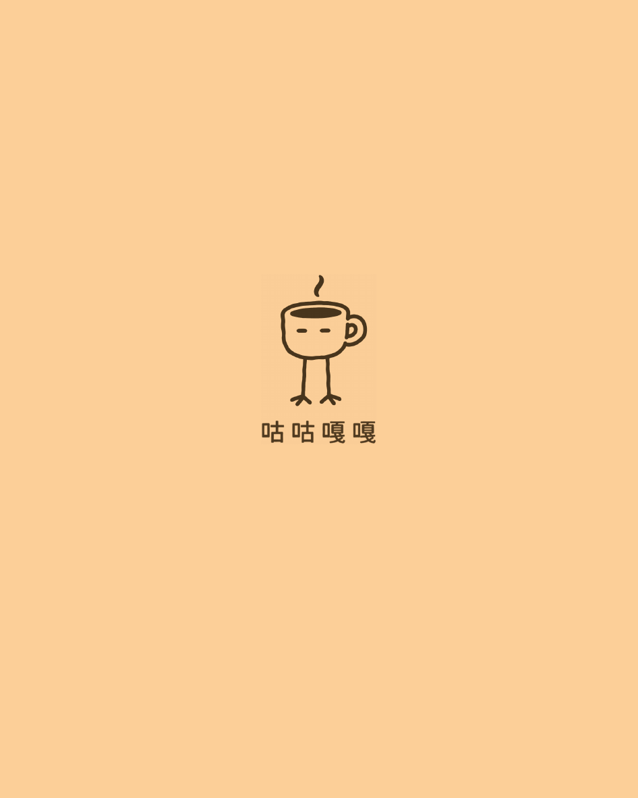
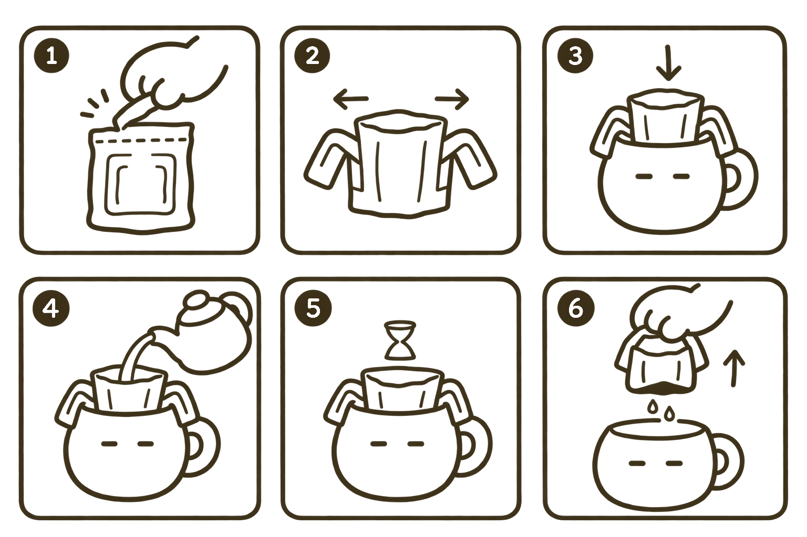

01

中焙果果谷
衣索比亞 · 古吉
- 處理法
- 四天厭氧日曬
- 烘焙度
- 中焙
濾掛 12g 整豆 200g

兩款豆，兩種喝法。把複雜留在外面，把咖啡留在日常。

中焙衣索比亞 · 古吉
濾掛 12g 整豆 200g
 中深焙
中深焙
衣索比亞 · 古吉
濾掛 12g 整豆 200g
YOUR DAILY CUP
想簡單一點，或多一點儀式感，
這杯咖啡都留給你。

撕開、掛好、注水。然後，喝咖啡。
一包濾掛 12g
總注水量
180 mL
撕開濾袋上緣，拉開兩側掛耳，穩穩固定在杯緣。
緩緩注入熱水，總注水量為 180 mL。
等待咖啡滴濾完成，取下濾袋，即可享用。